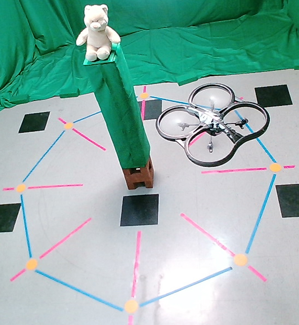
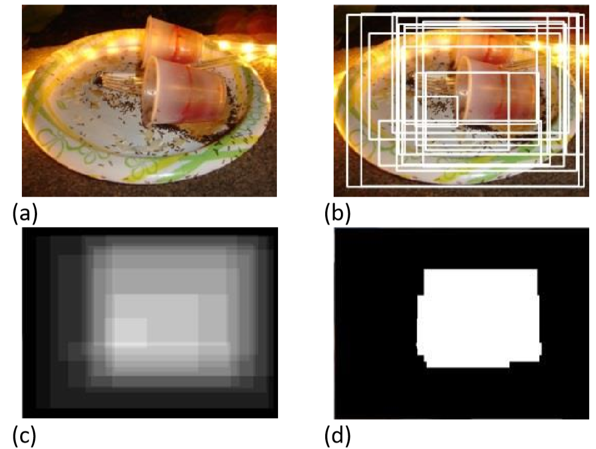
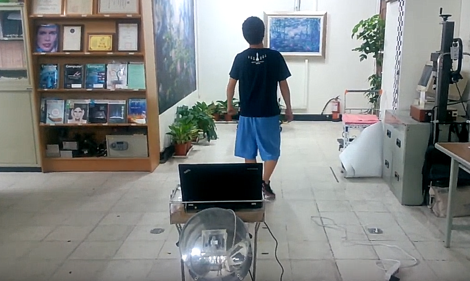

Home
About
Education
Publication
Work Experience
Research Projects
Academic service
Volunteer
Slides

University of California San Diego (UCSD) Statistical Visual Computing Lab (SVCL)
March 2018 - Present
Large-scale 3D reconstruction of real objects
Study of multiview embedding, pose invariant embedding
Study of real world adversarial attack
[Project]

Image collage based on emotional region of interest (ROI)
Cornell University Advanced Multimedia lab
Jul 2014 - Aug 2014
Summer intern student in Advanced Multimedia Lab directed by Prof. Tsuhan Chen
Utilizing the emotional ROI, our system stochastically generated image collage which displayed the salient region with the most emotion
[Pdf]
[Video]

Human tracking mobile robots with Kinect
National Chiao Tung University
Jul 2013 - Dec 2013
Identified user’s patterns with SIFT and GMM background subtraction algorithms
Integrated depth sensor information, target user features and mobile robot control
Supervised by Prof. Wen-Hsiang Tsai
[Video]